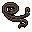
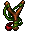
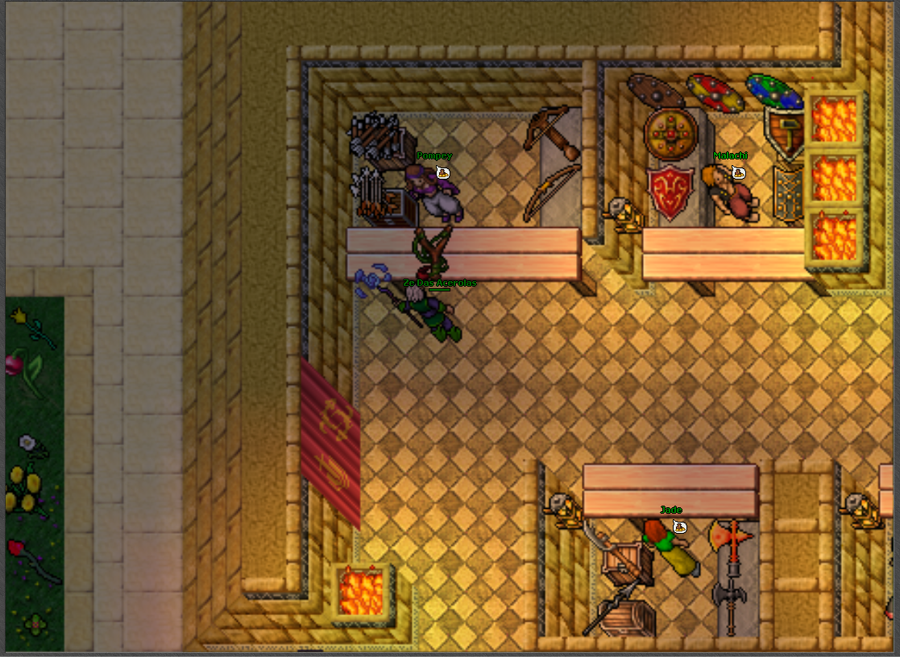

Black Sheep e War Bear
para pegar o "Black Sheep" você precisa do "Reins" que dropa de "Hero" é só ir em hero1 ou hero2 que drop até que de boa😜, level 40+.

Tentando Capturar.

Não peguei o "War Bear" por que já tinha ele, mas o item de domar ele é o "Slingshot" que pode ser comprado em dunedain e fica no mesmo lugar do Black Sheep.
  Home